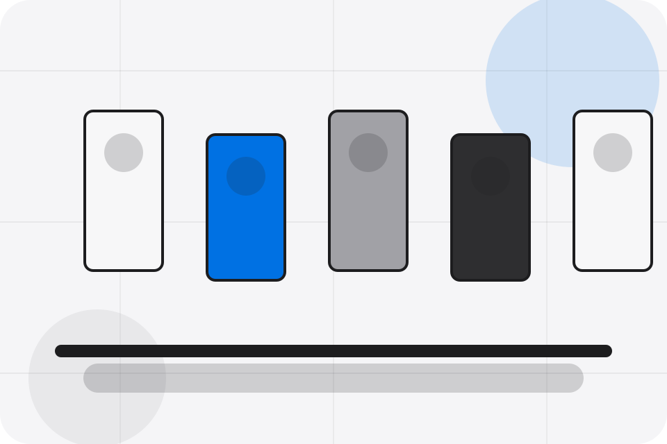
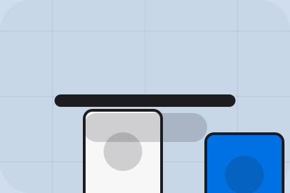

Journal / 01
Journal by Corner
Journal shaped for retail, shops & consumer sales decisions.
Journal opens as a clear retail decision hub: what Corner offers, who it helps, why it matters, and which route to take first.
The first screen combines positioning, proof, primary action, and fast internal navigation, so people can act immediately or compare the rest of the journal route with context.
Browse quicklyCompare clearlyAsk availability
Soft product shelf hero
Filter the catalogue
Select the closest route and Corner keeps the next step, proof, and follow-up expectation aligned with convenience and offer discovery.

Journal / 02
Guides
Guides gives researching visitors a practical route into guides, checklists, and comparison material without leaving the site structure.
Each resource behaves like a useful internal link, giving cold and warm visitors a way to learn, compare, and return to the action path.
View ResourcesGuide
A useful entry point for visitors who need more context before they visit the shop.
Checklist
A scannable comparison aid that makes research usable before the next decision.
Questions
A route back to support, services, or contact when the visitor is ready to act.
Corner guides guide
A useful entry point for visitors who need more context before they visit the shop.
Open resourceCorner guides stockist
A scannable comparison aid that makes research usable before the next decision.
Open resourceCorner guides comparison
A route back to support, services, or contact when the visitor is ready to act.
Open resourceJournal / 03
Trends
Trends gives researching visitors a practical route into guides, checklists, and comparison material without leaving the site structure.
Each resource behaves like a useful internal link, giving cold and warm visitors a way to learn, compare, and return to the action path.
Explore JournalGuide
A useful entry point for visitors who need more context before they visit the shop.
Checklist
A scannable comparison aid that makes research usable before the next decision.
Questions
A route back to support, services, or contact when the visitor is ready to act.
Journal / 04
Howto
Howto gives researching visitors a practical route into guides, checklists, and comparison material without leaving the site structure.
Each resource behaves like a useful internal link, giving cold and warm visitors a way to learn, compare, and return to the action path.
Explore Journal- 01
Guide
A useful entry point for visitors who need more context before they visit the shop.
- 02
Checklist
A scannable comparison aid that makes research usable before the next decision.
- 03
Questions
A route back to support, services, or contact when the visitor is ready to act.
Journal / 05
Inspiration
Inspiration gives researching visitors a practical route into guides, checklists, and comparison material without leaving the site structure.
Each resource behaves like a useful internal link, giving cold and warm visitors a way to learn, compare, and return to the action path.
Explore JournalCorner structures inspiration around guide, checklist, and a clear next route so visitors can compare the block quickly before they visit the shop.
Visit ShopJournal / 07
Gifts
Gifts gives researching visitors a practical route into guides, checklists, and comparison material without leaving the site structure.
Each resource behaves like a useful internal link, giving cold and warm visitors a way to learn, compare, and return to the action path.
Explore JournalGuide
A useful entry point for visitors who need more context before they visit the shop.
Checklist
A scannable comparison aid that makes research usable before the next decision.
Questions
A route back to support, services, or contact when the visitor is ready to act.
Journal / 08
Products
Products explains the practical scope, best-fit situations, and expected outcome so retail visitors can compare options without decoding jargon.
The section keeps the offer concrete: what is included, who it is best for, what decision it supports, and which linked route gives the deeper detail.
Explore JournalBest Fit
Who should use products and when it belongs in the journal journey.
Soft product shelf hero
Filter the catalogue
Select the closest route and Corner keeps the next step, proof, and follow-up expectation aligned with convenience and offer discovery.
Journal / 09
Read
Read gives researching visitors a practical route into guides, checklists, and comparison material without leaving the site structure.
Each resource behaves like a useful internal link, giving cold and warm visitors a way to learn, compare, and return to the action path.
Explore Journal- 01
Guide
A useful entry point for visitors who need more context before they visit the shop.
- 02
Checklist
A scannable comparison aid that makes research usable before the next decision.
- 03
Questions
A route back to support, services, or contact when the visitor is ready to act.
Journal / 10
Visit Shop
Corner closes the journal route with a clear action, a quick reminder of the value, and a low-friction way to visit the shop.
Visitors who are ready can use the primary action. Visitors who are still comparing can scan the section links, proof, and support routes before they visit the shop.
Visit ShopThe final block keeps the choice simple: act now, compare one more proof route, or send enough detail for a focused response.
Visit Shopconvenience and offer discovery
Visit Shop
A retail shopfront with clean product shelves, rounded offer cards, service proof, and store-finder CTAs. Journal ends with a direct path to visit the shop, plus enough context for visitors who still need to compare.

Visit ShopNotes
Information is provided for planning and should be reviewed for the final client, location, and operating rules.